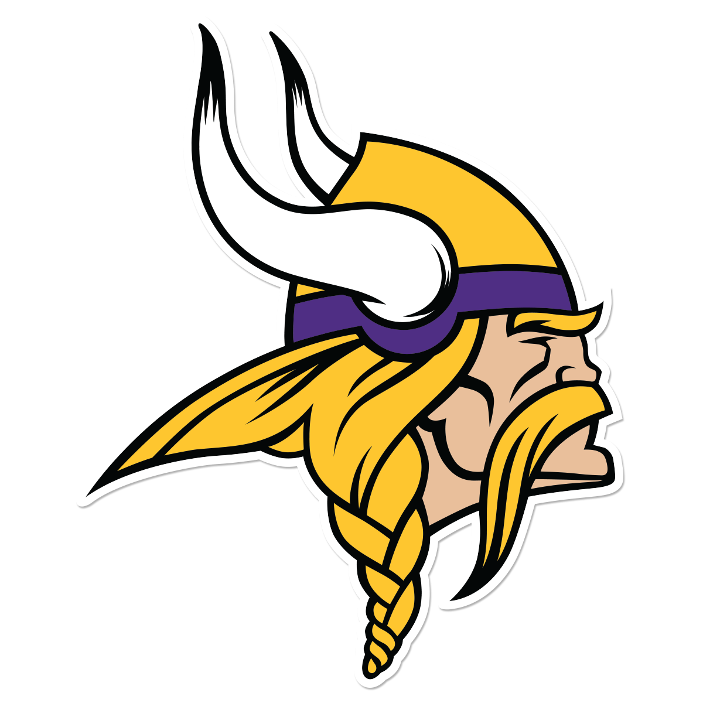

<template>
  <div class="container">
    <h1 class="title">The Minnesota Vikings Skol Line</h1>

    <nav role="navigation" class="navbar navbar-inverse">
      <!-- Brand and toggle get grouped for better mobile display -->
      <div class="navbar-header">
          <button type="button" data-target="#navbarCollapse" data-toggle="collapse" class="navbar-toggle">
              <span class="sr-only">Toggle navigation</span>
              <span class="icon-bar"></span>
              <span class="icon-bar"></span>
              <span class="icon-bar"></span>
          </button>
          <a href="#" class="navbar-brand"></a>
      </div>
      <div id="navbarCollapse" class="collapse navbar-collapse">
          <ul class="nav navbar-nav">
              <li repeat.for="row of router.navigation" class="${row.isActive ? 'active' : '}">
                <a href.bind="row.href">${row.title}</a>
              </li>
              <li><a href="/admin">Admin</a></li>
          </ul>
          <ul class="nav navbar-nav navbar-right">
              <li><a href="/logout">Logout</a></li>
          </ul>
      </div>
    </nav>

    <router-view></router-view>

    <hr>
    <div class="footer">
      <p>&copy; 2015 Matt Richards</p>
    </div>
  </div>
</template>
